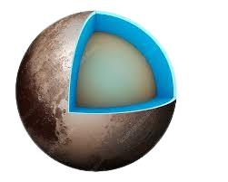

Pluto is a dwarf planet located in the outermost region of our solar system, beyond Neptune in the Kuiper Belt. Once classified as the ninth planet, it was reclassified as a dwarf planet in 2006 by the International Astronomical Union due to its small size and inability to clear its orbit of other debris. Pluto is made mostly of rock and ice, and has a thin atmosphere composed of nitrogen, methane, and carbon monoxide. It has five known moons, with Charon being the largest, almost half the size of Pluto itself. Pluto’s surface features include vast plains, mountains made of water ice, and frozen methane, as well as large heart-shaped regions like Tombaugh Regio. In 2015, NASA’s New Horizons spacecraft made a historic flyby of Pluto, sending back detailed images and data that revealed much about its geology, atmosphere, and moons. Despite its reclassification, Pluto remains one of the most fascinating objects in our solar system.

SOME INTRESTING FACTS ABOUT PLUTO
Dwarf Planet:Pluto is classified as a dwarf planet due to its small size and inability
to clear its orbit of other debris.Cold and Icy:Pluto has an extremely cold surface, with temperatures dropping to around
-229°C (-380°F).Five Moons:Pluto has five known moons, with Charon being the largest and nearly half
the size of Pluto.Heart-Shaped Region:Pluto has a large, heart-shaped area called Tombaugh Regio, named
in honor of its discoverer, Clyde Tombaugh.New Horizons Flyby:NASA's New Horizons spacecraft made a historic flyby of Pluto in
2015, providing the first close-up images of its surface.Slow Rotation:Pluto takes 6.39 Earth days to complete one rotation, meaning its day
is almost a week long.
Pluto Hidden Wonders and Bizarre Phenomena
Atmospheric Changes:Pluto’s atmosphere expands and contracts unpredictably, showing unexpected
patterns.Cold Spots:Pluto has mysterious cold spots, where temperatures are lower than expected, with
no clear explanation.Possible Ocean:Data suggests Pluto may have a subsurface ocean, though this is still uncertain.Charon's Rotation:Charon’s synchronous rotation with Pluto has a mysterious wobble, yet to be
fully understood.Surface Features:Pluto’s diverse surface, including young mountains, poses a mystery about its
geological history.Tidal Heating:Pluto’s interaction with Charon could cause internal heating, but the effects are
unclear.